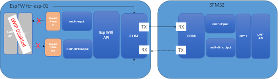
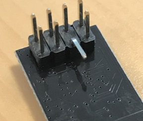
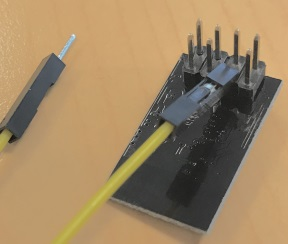
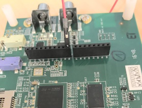
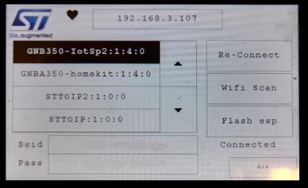
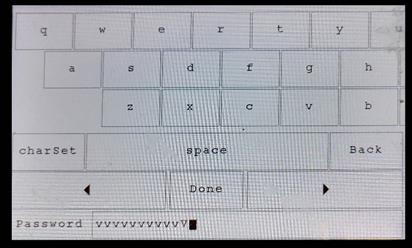

|
STVS4A
v1.1.1
|
|
STVS4A
v1.1.1
|
STAVS4A provides a Wi-Fi support over an LWIP bypass. STAVS4A uses the module esp8266 to connect LWIP to a Wi-Fi spot. The esp8266 has a set of different firmware variants to get access the Wi-Fi such as a LUA language, AT commands etc.….
Those variants do not fit the STVS4A requirements since we need a full BSD API support to manage HTTP/TLS and audio streams. So STVS4A needs its own FW for the esp-01 allowing to a full LWIP by pass. Without replacing the existing FW by the espFW, STVS4A won’t be able to connect a Wi-Fi spot and use it.
The espFW installs a LWIP bypass, the Firmware hooks in the Esp internal LWIP and captures all Ethernet frames, then, transports those frames to the STM32 LWIP using the UART. The espDrv allows to use those frames transported by the UART, and re-inject them in LWIP running of the STM32. The module allows also to configure the Esp Wi-Fi and exposes an API to scan the Wi-Fi, change the Wi-Fi mode etc.

LWIP Bypass architecture
There are many ways to flash a new FW in an esp-01. You can buy a specific flasher on the internet, build your own flasher on a prototype board, etc.
STVS4A project provides a simple way to achieve this operation using the board. To flash the esp-01, you need to set the pin GPIO0 of the module esp-01 to 0. Then, transmit the new firmware using the serial using a tool such as espTool.exe.
We need to rework a little bit the board to allow to the stm32 to set the GPIO0 pin at the right value. We need to bend the pin GPIO0 of the esp-01 and connect the pin to an STM32 GPIO (see the figure below). For example for the board STM32F76I-Disco, the esp-GPIO0 must be connected to the Arduino connector CN9:D8 as printed on the GUI. Then reconnect the esp-01 to the board.
After this operation, the STM32 will be able to drive the esp-01 reboot mode (flashing or normal). When the flash is done, you can remove the wire and put the esp-GPIO0 to the original position.
|
|
|

|
|
 |
Esp-01 board rework
|

|
Esp-01 on the 32F769 Discovery kit
To start the ESP flash, wait for the around 1 minute for the network time-out, then the GUI should be displayed. Select the WIFI page and push the button “Flash esp” from the GUI Wi-Fi page. Then, execute the script flash-espFw.bat located in the folder. “Middlewares\ST\STVS4A\Src\Porting\Network\LWIP_esp\espFwBin”.
Before using the demo, you have to setup the Wi-Fi hot spot, the STVS4A GUI provides a page to do it.
1) Push on “Wi-Fi scan”
2) Select the Wi-Fi SSID using arrows
3) Push on the “Pass” button and enter the password (notice uses arrows to scroll the keyboard). Hit done when it is finished
4) Push on the button re-connect
You have to repeat this operation each time you change the hotspot, the STVS4A demo stores the ssid info in the persistent storage.
|
 |
GUI Wi-Fi page
|
 |
Password page to enter the password
After those steps, you can check the Wi-Fi connection state on the screen and after a few second the IP control will be filled. And the AVS connection process will start.
It is possible to use the board to restore the original FW AT-command. First you have to go to following page at the AT section.
· https://www.espressif.com/en/products/hardware/esp8266ex/resources.
Download the version you want to re-install. Read the instructions according to the version, then use espTools.exe and the board configured in “Flash esp” to restore the original Firmware.
 1.8.4
1.8.4